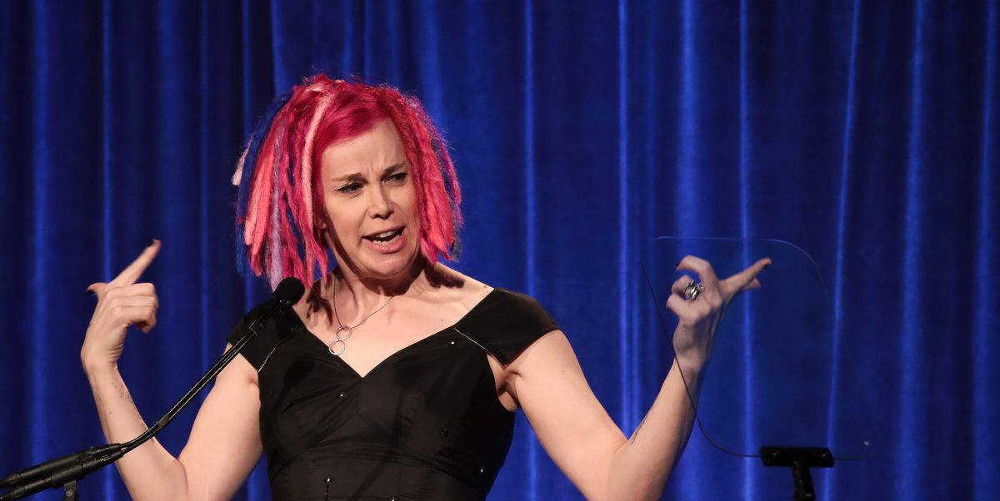
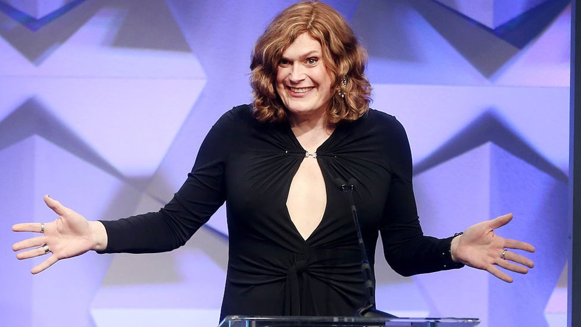

Es la mayor de ambas hermanas y representa la primera de ambas en entrar al mundo de la dirección artísitca al crear comics que nunca llegaron a ser publicados, posteriormente y ya con un contrato de trabajo su primer guión fué el de Assasin, y aunque intentaron eliminar su nombre de este fué imposible
21 de junio de 1965
Es la menor de las dos hermanas, esta taqrdó más en mostrar su habilidad en la dirección artísticva debido a que nunca tuvo la oportunidad de diseñar comics como si lo hacía su hermana mayor, hasta que en el año 1996 su hermana le propuso colaborar en la película Unbound, dando inicio a su carrera en conjjunto, para posteriormente, en 1999 destacar ambas como productoras ejecutivas en Matrix, la película que nos interesa
29 de diciembre de 1967
